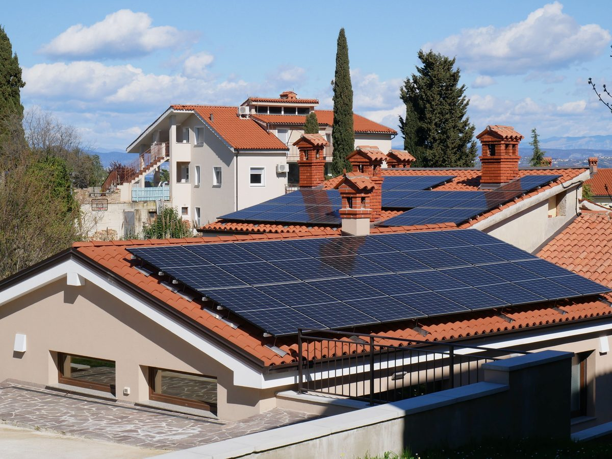

It's the first question almost everyone asks before going solar: how many panels will it actually take to run my house? The reason there's no single answer is that "a house" isn't a fixed amount of energy — a small, efficient apartment and a large home with air conditioning and electric heating can differ by a factor of five or more. But the good news is that the calculation itself is simple, and it comes down to just three numbers you can find or estimate today.
The three numbers that decide everything
Every panel-count estimate, no matter how sophisticated, is built on these three inputs:
- Your electricity usage — how many kilowatt-hours (kWh) your home consumes, usually per month. This is printed on your utility bill.
- Peak sun hours — how many hours of full-strength sunlight your location receives on an average day. This depends on where you live, not how long the sun is visible.
- Panel wattage — the rated power of the panels you plan to install, typically between 350 W and 550 W for modern residential panels.
Get those three, and the rest is arithmetic.
The formula
The calculation happens in two short steps. First, find the system size (in kilowatts) your home needs:
System size (kW) = Daily usage (kWh) ÷ Peak sun hours
Then convert that system size into a number of panels:
Number of panels = System size (kW) ÷ Panel wattage (kW)
That's the whole method. Everything else is refinement — accounting for real-world losses, deciding whether you want to cover 100% of your usage or just part of it, and adjusting for off-grid versus grid-tied.
A worked example
Let's run the numbers for a typical home:
- Monthly usage: 900 kWh — about 30 kWh per day
- Peak sun hours: 5 hours per day (typical for much of southern Europe, the southern US, and lower than the Middle East)
- Panel wattage: 400 W (0.4 kW)
Step one — system size: 30 kWh ÷ 5 sun hours = 6 kW.
Step two — panel count: 6 kW ÷ 0.4 kW = 15 panels.
So this home needs roughly 15 panels to cover its usage on paper. In practice, because real systems lose around 20% of their theoretical output to heat, dust, wiring, and inverter losses, you'd size up slightly — to about 18 panels — to reliably cover the full bill. Our solar panel calculator does this adjustment for you automatically.
Why location matters so much
The same house needs a very different number of panels depending on where it sits. Because system size is your daily usage divided by peak sun hours, a sunnier location shrinks the system directly. Our example home needing 15 panels at 5 peak sun hours would need only about 12 panels at 6.5 peak sun hours (typical for Jordan and the Gulf), but around 22 panels at 3.5 peak sun hours (typical for central Europe). Same house, same appliances — the sky does the rest. You can see this relationship plotted live on the panel calculator.
On any kilowatt-scale project, I always start by working out the actual loads and how many kilowatt-hours the site consumes in a month — that's what really decides the number of panels and which type to use. From there it becomes a roof problem: how to lay the panels out across the space that's available, at the best tilt angle to maximize production and cut losses. I keep them clear of any shade, and depending on the ideal angle I'll either mount them flat on the roof surface or raise them on a frame. Getting those two things right — real consumption first, then smart placement — matters more than any rule of thumb about "panels per house."
Grid-tied vs off-grid: the count changes
Everything above sizes a system to match your energy usage — which is exactly right for a grid-tied home that can draw from the grid at night and export surplus during the day. An off-grid home is different: it has to generate everything it needs plus a surplus to charge batteries for night-time and cloudy days. That typically means adding 20-30% more panels, and pairing them with a battery bank. If you're weighing the two approaches, our guide on grid-tied vs off-grid vs hybrid systems breaks down the trade-offs, and the off-grid system wizard sizes panels, battery, and inverter together.
How panel wattage changes the count
Because the panel count is your system size divided by each panel's wattage, choosing higher-wattage panels directly reduces how many you need. Our 6 kW example needs 15 panels at 400 W each — but only about 13 panels at 450 W, or 17 panels at 350 W. When roof space is tight, higher-wattage panels are often worth the modest price premium because they let you fit more capacity into the same area.
Putting it together
To estimate your own number: pull your monthly kWh from your bill, look up your region's peak sun hours, pick a panel wattage, and run the two-step formula — or let the panel calculator do it instantly. If you're not sure of your usage yet, the daily load calculator helps you build it up appliance by appliance, and the energy production calculator shows how much a given system will actually generate.
Frequently asked questions
How many solar panels does an average house need?
A typical home using around 900 kWh per month in a location with 5 peak sun hours needs roughly 15 to 18 panels of 400 W each. The exact number depends on your actual electricity usage, the wattage of the panels you choose, and how much strong sunlight your location gets. A home that uses more electricity, chooses lower-wattage panels, or sits in a cloudier region will need more.
Can solar panels run a whole house?
Yes. A correctly sized grid-tied system can offset all of a home's annual electricity use, and an off-grid system with enough panels and battery storage can run a house entirely on solar. Running fully off-grid requires extra panels and a battery bank sized for cloudy days, so it needs more hardware than a grid-tied system that can lean on the grid at night.
How many solar panels to run a house off-grid?
Off-grid systems need more panels than grid-tied ones because they must generate a full day's energy plus a surplus to charge batteries for night-time and cloudy-day use. As a rule of thumb, add roughly 20 to 30 percent more panels than a grid-tied system for the same house, and pair them with a battery bank sized for your desired days of autonomy.
Does panel wattage change how many I need?
Yes, directly. Higher-wattage panels produce more energy each, so you need fewer of them. For example, replacing 350 W panels with 450 W panels reduces the panel count by roughly 20 percent for the same system size — useful when roof space is limited.